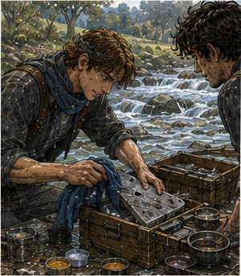
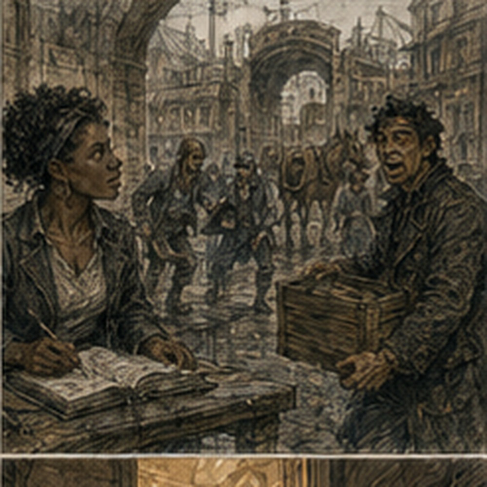

The beer cost one copper. This became important in the morning. I had one copper. One. Old Greg had owned property. Probably. Present Greg had breakfast money. Maybe. I ate at the lodging house because the cook would put breakfast against tomorrow if I asked. I did not ask. Pride was expensive.
One copper bought bread, porridge, and tea weak enough to count as warm water. Zero copper. Excellent. Hessa first. Three days. No symptoms. That did not mean no consequences. My shoulders were better. Back better. Knee from Turnip had turned yellow at the edge. Channels quiet. Hands fine. I arrived before Hessa's first student. She looked at me, then at the clock.
“Early.”
“I am poor.”
“That is not usually contagious.”
“I need work after.”
“Sit.”
She checked pulse. Eyes. Hands. Asked about sleep. Asked about the road job. Asked about the pig because apparently Jorren had already told someone who had told someone else.
“I did not fight it.”
“You cast.”
“One coin.”
“Symptoms?”
“No.”
“After?”
“No.”
“Any other casting?”
“No.”
“Good.”
She had me form a coin-sized Barrier. Four breaths. Clean. Release. Again. Different angle. Three breaths. Clean. Release. Then palm-sized. Two breaths. Pressure one. Release. Gone quickly. Hessa nodded. I waited.
“Still the same?”
“Almost.”
“Almost?”
“Coin-sized utility is fine if you stay sensible. Palm-sized remains brief and necessary only. No repeated load work. No sustained Barrier.”
“That is the same.”
“You recover faster.”
“That is not more magic.”
“It is more body.”
Annoying distinction.
“Can I spar?”
“With no deliberate casting.”
“Can I fight?”
“If someone insists.”
“Helpful.”
“Greg.”
“Yes.”
“You are improving.”
There. I almost smiled. She ruined it.
“Slowly.”
“Fuck you.”
“Three days again.”
I stood.
“Unless symptoms.”
“Unless symptoms.”
Outside, the city was already warm. No money. Guild. The contract board had three things I could take without pretending my back wanted another hauling day. Morning message run. Two copper. Roof tile count. Two copper. Route-marker check. Three copper.
The route-marker check was half day, west feeder roads, no expected creatures, rain damage possible, paired assignment. Paired. I looked at the clerk.
“Why paired?”
“Route key.”
“What?”
“Two seals. Guild and courier office.”
“Why?”
“Because people steal marker plates.”
“Why?”
“Metal.”
Of course.
“Who is courier?”
She looked past me.
“Late.”
Good. I could take the message run. Safer. Faster. Two copper. I reached for the slip. Someone behind me said, “Don't.” I turned. A man about my age. Maybe twenty. Same dark hair as Octavia, except his had surrendered. Not messy like mine. Wind-compromised. Brown courier coat open at the throat. Route satchel. Mud to one knee. One glove. No other glove.
He held a painted wooden route marker under one arm. The marker had been split clean through the middle. He looked at the message slip.
“North clerk will make you wait until second bell.”
“How do you know?”
“I made him wait yesterday.”
“Why?”
“Wrong stamp.”
“His?”
“Mine.”
Good. He put the broken marker on the counter. The clerk closed her eyes.
“Sevren.”
There. Oh. I looked at him. He looked at me.
“You're Greg.”
Not question.
“Yes.”
“Octavia said you stare.”
I looked at the clerk. Not Octavia. Different clerk.
“Does everyone know that?”
“Yes,” Sevren said.
“I liked you better before.”
“Before what?”
“Meeting you.”
He smiled. Not offended.
“Fair.”
Premature judgment under review. The clerk tapped the broken route marker.
“What happened?”
“Cart.”
“Your cart?”
“No.”
“Did you see it happen?”
“Yes.”
“Did you stop the cart?”
“No.”
“Why?”
“It had already happened.”
Reasonable.
“Why did you bring the marker?”
“Because it was in two pieces.”
“That does not answer why.”
“It felt relevant.”
I liked him again. Dangerous. The clerk pointed at the paired route-marker posting.
“You.”
Sevren looked.
“Me?”
“You found it.”
“That is not how responsibility works.”
“It is today.”
He read. Then looked at me.
“You taking it?”
“I was about to take the message run.”
“Bad choice.”
“Because of the stamp?”
“Because three copper is more than two.”
Strong.
“Half day.”
“Still more.”
He did not know I had zero copper. No need. The clerk said, “If you two want it, sign.”
“Why two seals?” Sevren asked.
She stared at him.
“You know why.”
“Yes.”
“Then stop.”
He signed. I signed. No ceremony. No prophecy. Sevren Orin. Courier. Mud. One glove. Bad influence. The clerk gave Sevren a narrow brass key and me a square wax seal in a padded wooden box.
“Do not lose that.”
“Why do I get seal?”
“Because he loses gloves.”
Sevren looked at his bare hand.
“I know where it is.”
“Where?”
“Probably cart yard.”
“Then it is lost.”
He considered.
“Fair.”
We left. The west feeder route was not the west orchard road. Related. Smaller. It split from the main road beyond the gate and served farms, two stone pits, a dye field, and several hamlets that were apparently too small to deserve individual names on the Guild board.
Our job:
Six marker boxes. Open each. Check route plate. Check rain damage. Replace wax strip. Record obstruction. Three copper each. Easy. Sevren walked fast. Not adventurer fast. Courier fast. Difference. He carried speed in his hips and never seemed to waste a step deciding where his foot belonged. I noticed. Then stopped noticing because keeping up required attention.
“Do you always walk like this?”
“Yes.”
“Why?”
“I have places.”
“Everyone has places.”
“Mine pay by arrival.”
Good. We passed the first mile marker. No conversation. Fine. At the first box, Sevren did not stop where I expected. He went behind the post.
“What?”
“Drain.”
There was a shallow stone channel beside the marker. Half blocked with leaves. He kicked them clear. Water moved. Then unlocked the box.
Inside:
brass route plate. Dry. Wax strip intact. He read number. I recorded. He closed. I resealed. Simple.
“You clear drains too?”
“No.”
“You did.”
“It was there.”
“That is how jobs expand.”
He looked at me.
“Did you want to leave it?”
No. Annoying. Second marker had a loose hinge. Sevren tightened it with the back of his key. Not correct tool. Worked.
“Do you carry tools?”
“Yes.”
“Where?”
“Other glove.”
I laughed. He grinned. Not performing. Just pleased. Third marker was gone. Post remained. Box gone. We stopped. Sevren looked at the empty bolts. I looked at the road.
“Stolen?”
“Maybe.”
“Cart?”
“Maybe.”
“Flood?”
“Maybe.”
He crouched. Mud around post. Wheel rut close. One bolt bent outward. One inward. No clean answer. I started building possibilities. Sevren stood.
“Come on.”
“What?”
“Find box.”
“How?”
“Downhill.”
He was already walking. Right. Physical problem. He went into the ditch. I followed. Thirty yards. Nothing. Then fifty. A clump of reeds. Metal glint. Box. Bent. Not stolen. Probably ripped by wheel or water and carried. Sevren lifted it.
“Found.”
“You did not establish cause.”
“Do we need cause?”
I looked at form.
RAIN DAMAGE / OBSTRUCTION / MISSING / OTHER.
No cause field.
“No.”
“Good.”
He carried it back. I disliked how often this worked. At the post, the box would not sit flush. Bent back plate. Sevren put one foot on lower edge.
“Don't.”
He stopped.
“What?”
“You'll bend door too.”
“Maybe.”
“Yes.”
“Better idea?”
I looked. Could use Barrier. No. Not necessary. Post bolts had enough thread. If we added washers. No washers. Could mount with wood spacer. No wood. Could mark missing and return. Yes.
“Report it.”
He looked at box.
“Could make it fit.”
“Could make it worse.”
He considered. Then nodded.
“Fine.”
That surprised me.
“What?”
“Nothing.”
“You expected argument.”
“Yes.”
“Why?”
“Octavia.”
He laughed.
“There it is.”
“What?”
“She told you about me.”
“Some.”
“How bad?”
“Route choice created a logistical problem.”
“Which one?”
I looked. He genuinely did not know.
“Several?”
“Probably.”
He tucked box under his arm.
“We report.”
No defense. No story. Good. Fourth marker was on a hill above a shallow ford. The ford had widened.

Not dangerously. Enough that the stepping stones were underwater. We did not need cross. Marker box on our side. Sevren opened it. Wet inside. Wax strip smeared. Route plate green at one corner. I recorded.
“Need replace seal.”
“Dry first.”
“Yes.”
No cloth. Sevren took off courier scarf. Used it.
“Now wet scarf.”
“It dries.”
“Efficient.”
“See?”
Dangerous. We waited. Not long. Sun. He held box open. I looked at ford. Water fast enough to pull at ankles.

“Do you cross that on route?”
“Usually.”
“Today?”
“No.”
No bravado.
“Why?”
“There's a bridge half mile north.”
Good.
“So you do choose safe route.”
“I choose route that gets me there.”
“Those are not always same.”
“No.”
“Octavia would say safe.”
“Octavia likes arriving with paperwork dry.”
“So do you.”
“Yes.”
Related. Not opposite. The box dried enough. New wax. Seal. Done. We took the north bridge. This added distance. Sevren did not complain. At bridge midpoint, a wagon blocked half the span. Rear axle tilted. Driver underneath. Two farmhands standing. No danger. Just obstruction. Sevren looked at gap between wagon and rail. Maybe three feet. Enough for people. Not cart. We were people.
He went through. I followed. Driver said, “Watch the wheel.” Sevren stepped around. I stepped around. No intervention. Excellent. On far side, one farmhand called, “Courier.” Sevren turned.
“Yeah?”
“You going Harrow Lane?”
“Later.”
“Take word to Mina Vell. Axle broke. Joss will be late.”
“Which Joss?”
“Tall.”
“Useless.”
“Red hat.”
“Better.”
Sevren nodded. No paper. No payment.
“Remember?”
“Yes.”
We kept walking.
“You do that for free?”
“It's on route.”
“Not your contract.”
“My route.”
Difference.
“How many things do you carry that aren't written?”
“Depends.”
“That sounds dangerous.”
“It is mostly names.”
“Names are worse.”
He shrugged. Fifth marker was perfect. Sixth had ants. Many ants. Not magical. Sevren opened box. Ants objected. He closed it.
“Problem.”
“Yes.”
“How do we check plate?”
“Move ants.”
“How?”
He looked around. I started thinking. Water? Smoke? Brush? Barrier useless. Sevren picked up a long grass stem and began gently sweeping ants off hinge and lip.
“That will take forever.”
“No.”
It took two minutes. I hated him. We opened. Checked. Resealed. Ants resumed ownership. Done. On return, Sevren detoured. I noticed after thirty seconds.
“Guild is east.”
“Yes.”
“You are going south.”
“Yes.”
“Why?”
“Mina Vell.”
Right. Message.
“Is that before Guild?”
“Closer now.”
Could be. Maybe. We went. Mina Vell ran a small dye shed. Sevren leaned through open door.
“Joss, red hat, axle broke at north bridge. Late.”
A woman stirring a vat said, “Again?”
“Different axle.”
“Tell him I said he owes me.”
“If I see him.”
Done. No thanks expected. No coin. Back to road.
“You remembered exact wording?”
“No.”
“What did they say?”
“Axle broke. Joss late.”
“And red hat.”
“That was for me.”
Good. We reached west gate before noon. Octavia was there. Of course. Not waiting for us. Working. Three ledgers open. Two runners. One wagon owner arguing about route fees. She saw Sevren carrying the bent marker box. Stopped.
“What did you do?”
“Found it.”
“That was not my question.”
“I did nothing.”
Greg evidence: plausible. She looked at me. I said, “He did not break it.”
“Thank you.”
Sevren pointed at me.
“See?”
Octavia ignored him.
“Route?”
I handed report. She read while answering another runner's question. Competent.
“Marker three missing from post, box recovered downhill. Back plate bent. Marker four wet interior. Ford widened. Route bridge passable but wagon axle currently obstructs half span. Sixth has ants.”
She looked up.
“Ants?”
“Significant ants.”
Sevren nodded.
“Hostile administration.”
Octavia did not smile. Almost.
“Did you reseal six?”
“Yes.”
“Four?”
“Yes.”
“Three?”
“No.”
“Good.”
She marked something. Then looked at Sevren's scarf. Wet.
“Why?”
“Four.”
She closed her eyes. Not angry. Tired.
“You own cloth.”
“Apparently.”
“You had two scarves.”
“Now one dry.”
Relationship. No exposition needed. The clerk paid us. Three copper. I had money again. Civilization. Sevren counted his once. Pocketed it. Octavia said, “North quay packet after lunch.” Sevren said, “Can't.” She looked up.
“Why?”
“Promised Lio I'd help move a stove.”
“Since when?”
“Yesterday.”
“Then why did you not mark yourself unavailable?”
“I forgot.”
There. Downstream logistics. Capable man. Administrative menace. Octavia stared. Sevren said, “I can do packet after stove.”
“It needs noon ferry.”
“What time?”
“Noon.”
He looked at gate clock. Not enough.
“Then no.”
Simple. He did not invent impossible plan. Octavia pointed at another courier.
“Rell.”
Rell took packet. Solved. Sevren looked at me.
“Food?”
Immediate objective shifted. I should go home. Save money. Maybe Varo. Pell. Antonius. No.
“Food.”
We bought meat pies. One copper each. I had two left. Sevren ate walking. Of course.
“Why stove?”
I asked.
“Lio helped me with a wheel.”
“When?”
“Month ago.”
“So debt.”
“No.”
“Then?”
“He asked.”
Simple.
“Where?”
“South quarter.”
“Do you need help?”
“No.”
Good. He took another bite.
Then:
“Stove is heavy.”
I looked at him.
“That is not asking.”
“No.”
“Are you asking?”
“Maybe.”
“Bad.”
“Will you?”
My shoulders were fine enough. Hessa had said body improving. Stove not magic. I had no appointment. I looked at him. Greg liked this guy. Unfortunately.
“Fine.”
Sevren smiled.
“Good.”
We turned south. I stopped.
“What?”
he asked.
“I do not know Lio.”
“You will.”
“That is how people multiply.”
“Yes.”
He kept walking. I followed. Premature judgment had survived first contact. This was probably a problem.